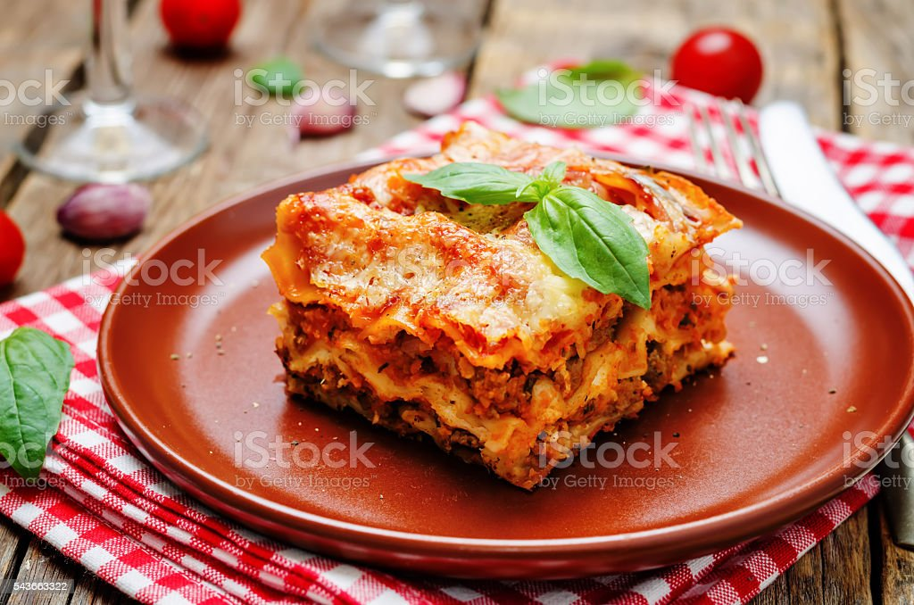

Lasagna

Description
Lasagna is a savory Italian dish renowned for its delectable layers of
wide, flat pasta sheets, interleaved with rich, hearty tomato sauce,
creamy béchamel sauce, and a flavorful blend of cheeses, typically
mozzarella, ricotta, and Parmesan. This layered masterpiece is often
interspersed with finely seasoned ground meat, such as beef or pork, and
occasionally includes vegetables like spinach or mushrooms, creating a
harmonious symphony of tastes and textures. The entire ensemble is baked
to perfection, resulting in a golden-brown top layer that adds a
satisfying crunch to each luscious, mouthwatering bite.
Ingredients
- 9 lasagna noodles, cooked according to package instructions
- 2 cups ricotta cheese
- 2 cups fresh spinach, chopped
- 1 egg
- 2 cups shredded mozzarella cheese
- 1/2 cup grated Parmesan cheese
- 2 cups tomato sauce
- 1 teaspoon dried basil
- 1 teaspoon dried oregano
- Salt and pepper to taste
- Olive oil for greasing
Instructions
- Preheat your oven to 375°F (190°C).
- Mix together cheese, spinach, eggs, etc.
- Place 3 cooked lasagna noodle side by side over the sauce.
- Spread half the ricotta-spinach mixtrue enely over the noodles.
- Add another layer of 3 lasagna noodles.
- Place a final layer of 3 lasagna noodles on top.
-
Spread tomato sauce over the top layer of noodles, ensuring even
coverage.
-
Bake in the preheated oven for 25-30 minutes, then remove the foil and
bake for an additional 10-15 minutes.
-
Remove from oven, let the lasagna rest for about 10 minutes before
slicing and serving.